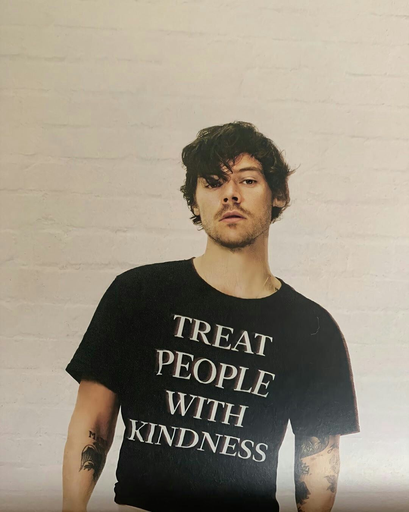
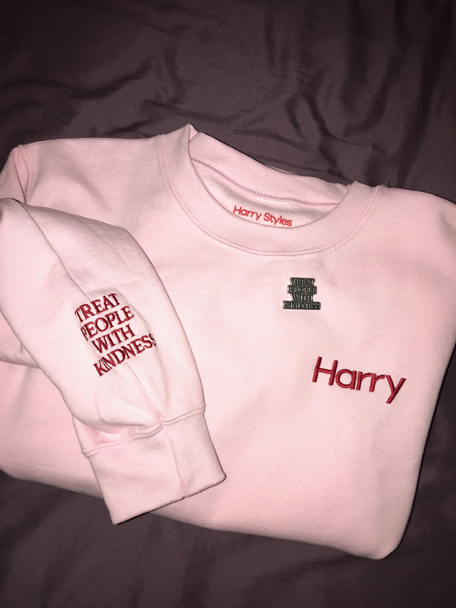
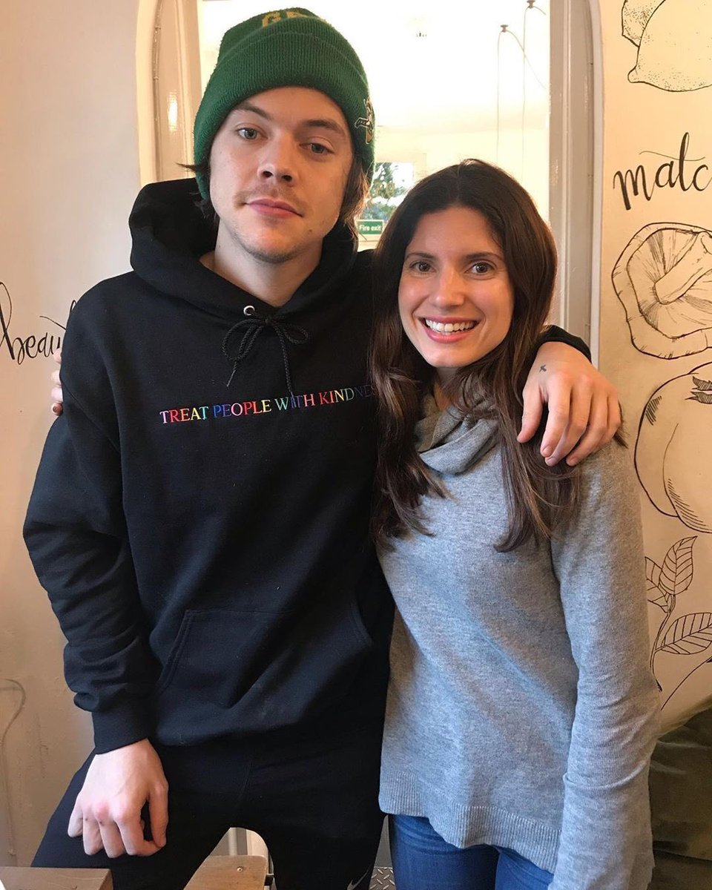
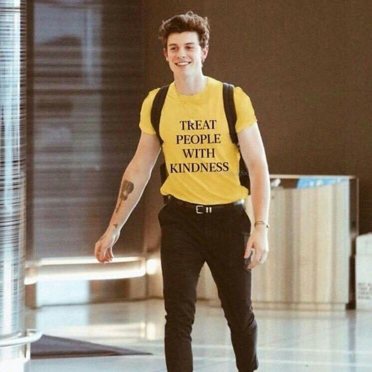

TPWK
“Small changes end up making a big difference,” he said.
“It’s about being a lot nicer to each other rather than, ‘Don’t do this, or don’t do that, not this yes that.’
It’s just saying, ‘Treat people with kindness,’ you know.”“I had an idea of writing a song to go with it and it
turned into a tribute, it’s just really fun,” he said.“When I first wrote it I wasn’t sure if I really liked it or really hated it,
but as it was going on I was like, ‘Oh I really like this, this is really fun,’” said Styles, who took encouragement
from a David Bowie interview clip when making the song.
The singer enjoys the fact that the idea for the song was generated organically on tour,
and paid tribute to his fans for allowing him to feel the freedom to make it.
“A big part of the freedom that I felt making this record came from touring last time and the
interaction with the fans,” he said. “When I was touring with One Direction, fans came to the show
but it was for something bigger. The band felt bigger than us, so it felt like they came to see that thing.
It never quite felt like, ‘Oh all these people are here for me.’”
Now, things have changed and Styles has realised that “fans want me make the music that I want to make and play the show that I’d like to play. People just want me to be myself and be authentic with them.”
MERCH




Most of his merch includes this message, he wants to make a world a better place to live in.Ever since his
one direction days he has been seen interacting with fans, hugging them , sending them merch with
personalised messages.
Harry Styles started trending on Twitter when a website surfaced titled "Do You Know Who You Are?"
Fans around the world were asked to type out their full name and find out the answer.
What came next were personalized positive messages from Harry including the acronym TPWK,
which stands for Treat People With Kindness.
He has always promoted mental health and in an interview he said "While I was in the band [One Direction],
I was constantly scared I might sing a wrong note. I felt so much weight in terms of not getting things wrong,
" he once told Rolling Stone. "I remember when I signed my record deal and I asked my manager, ‘What happens if I
get arrested? Does it mean the contract is null and void?' Now, I feel like the fans have given me an environment
to be myself and grow up and create this safe space to learn and make mistakes."
The merch is very popular among the fans and the message is being spread all over the world.